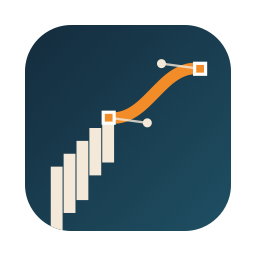

Privacy Policy
Pathsmith collects no data.
- On your device only: images you open, their trace settings and thumbnails are saved as projects in the app's storage on this device. Tracing runs on the device. Nothing is sent to the developer or anyone else.
- Photos: on iPhone and iPad, images come from the system photo picker, so the app only receives the photos you pick and does not ask for access to your photo library. On Mac, the app reads only the files you open or drop.
- Exports: files you export are saved or shared only where you choose.
- No network services: the app makes no network requests of its own. There is no account, server, advertising, analytics or tracking. The Support and Privacy links open your browser only when you tap them.
- Purchases: the optional one-time Pro purchase is processed by Apple through the App Store. The developer does not receive your payment details.
- Deleting data: delete a project in Projects (swipe or right-click › Delete); deleting the app removes all of its data. Whether app data is included in device backups follows your system settings.
- Children: Pathsmith does not collect data from anyone, including children.
If this policy changes, the new version will be posted on this page. Contact: ppupy1200@gmail.com · Effective October 2026
개인정보 처리방침
Pathsmith는 어떤 데이터도 수집하지 않습니다.
- 기기에만 저장: 연 이미지, 변환 설정, 미리보기 이미지는 이 기기의 앱 저장 공간에 프로젝트로 저장됩니다. 변환은 기기 안에서 하며 개발자나 다른 곳으로 보내지 않습니다.
- 사진: iPhone과 iPad에서는 시스템 사진 선택기를 쓰므로 고른 사진만 앱에 전달되고 사진 보관함 접근 권한을 요청하지 않습니다. Mac에서는 사용자가 열거나 끌어 놓은 파일만 읽습니다.
- 내보내기: 내보낸 파일은 사용자가 고른 곳에만 저장·공유됩니다.
- 네트워크 서비스 없음: 앱이 직접 하는 네트워크 요청이 없습니다. 계정, 서버, 광고, 분석·추적 도구가 없습니다. 지원·개인정보 링크는 누를 때만 브라우저를 엽니다.
- 구매: 선택형 한 번 구매(Pro)는 Apple App Store가 처리하며 개발자는 결제 정보를 받지 않습니다.
- 데이터 삭제: 프로젝트 화면에서 프로젝트를 지울 수 있고, 앱을 지우면 모든 데이터가 함께 지워집니다. 기기 백업 포함 여부는 시스템 설정을 따릅니다.
- 어린이: 어린이를 포함해 누구의 데이터도 수집하지 않습니다.
방침이 바뀌면 이 페이지에 새 내용을 게시합니다. 문의: ppupy1200@gmail.com · 시행일 2026년 10월